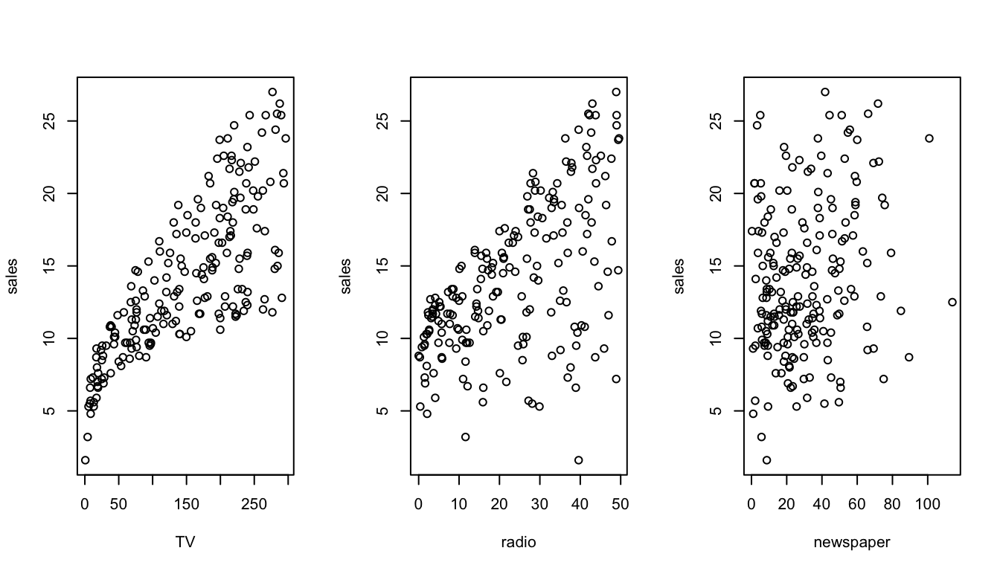
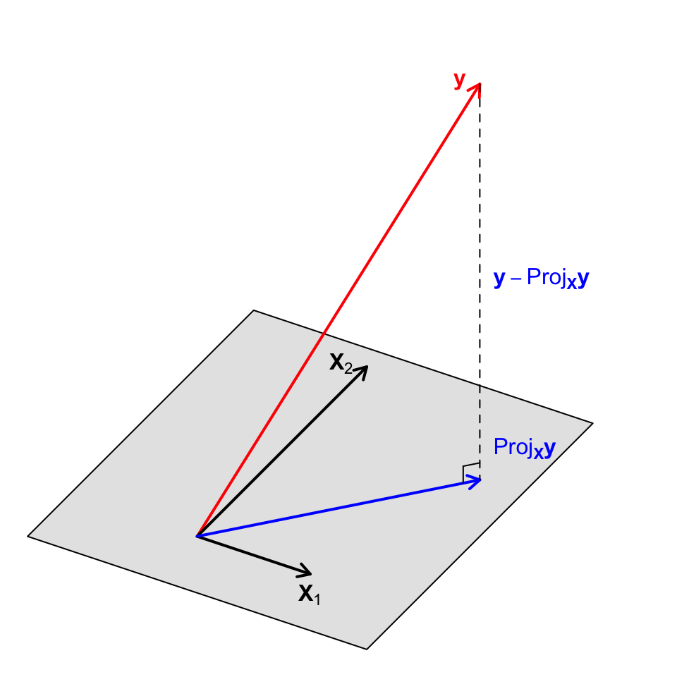
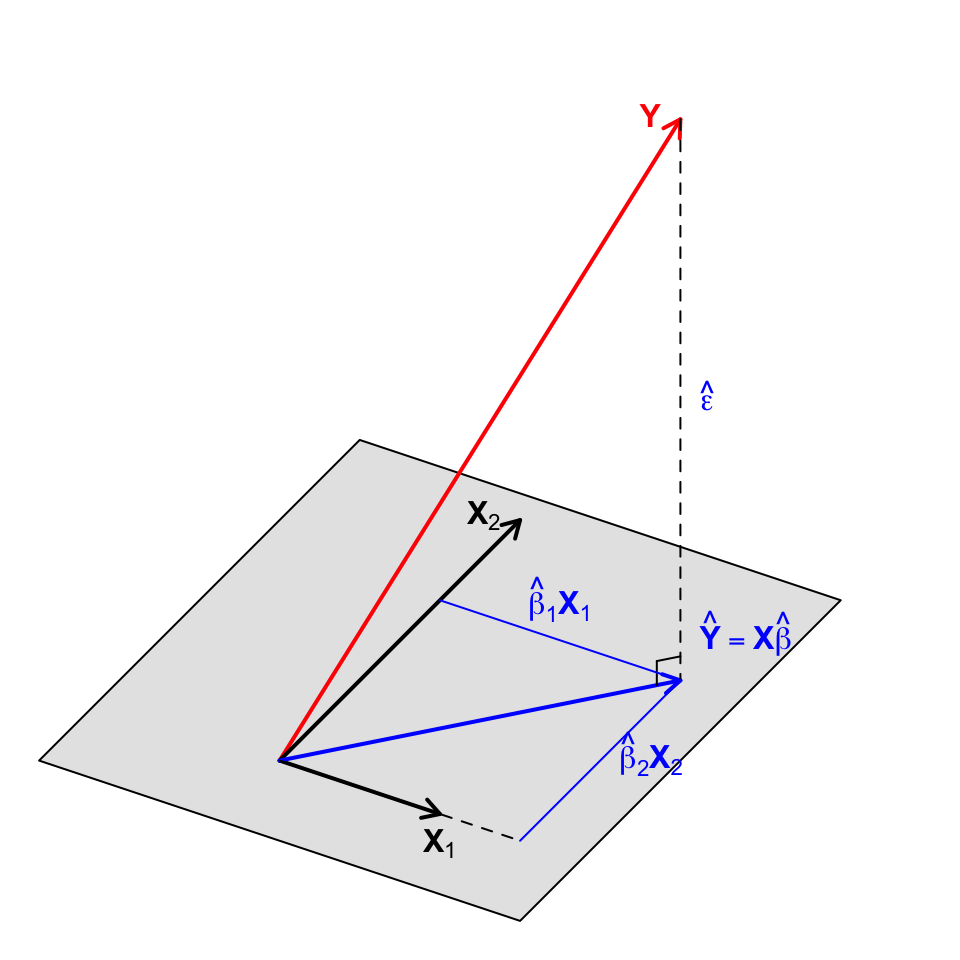
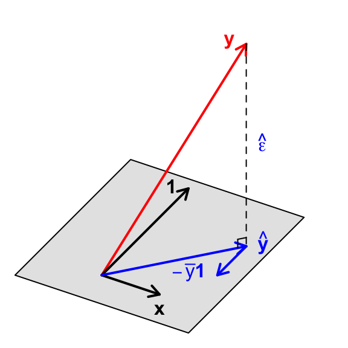
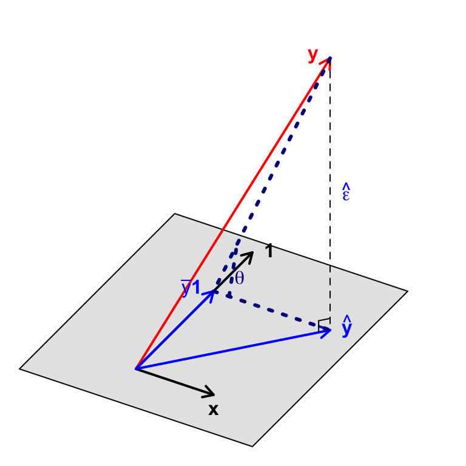

TV radio newspaper sales
1 230.1 37.8 69.2 22.1
2 44.5 39.3 45.1 10.4
3 17.2 45.9 69.3 9.3
4 151.5 41.3 58.5 18.5
5 180.8 10.8 58.4 12.9
6 8.7 48.9 75.0 7.2Régression Multiple - Moindres Carrés
Paul Bastide
2026-10-13
Advertising Data
Advertising - Data
TV,radio,newspaper: advertising budgets (thousands of $)sales: number of sales (thousands of units)
Advertising - Data

Advertising - Questions
Previous chapters: use only one medium to predict
sales
sales\(\approx \beta_0^{TV} + \beta_1^{TV}\)TV
or
sales\(\approx \beta_0^{radio} + \beta_1^{radio}\)radio
or
sales\(\approx \beta_0^{newspaper} + \beta_1^{newspaper}\)newspaperCan we use all variables at once ?
sales\(\approx \beta_0 + \beta_1\)TV\(+ \beta_2\)radio\(+ \beta_3\)newspaperMakes it possible to answer new questions:
- Is the global fit better ?
- Which media contribute to sales ?
- Is there synergy among the media ?
From Simple to Multiple Regression
Model - Simple Regression
\[y_i = \beta_0 + \beta_1 x_i + \epsilon_i, \quad \forall 1 \leq i \leq n\]
- \(y_i\): quantitative response for \(i\) (
sales) - \(x_i\): quantitative predicting variable for \(i\) (
TV) - \(\epsilon_i\): “error” for \(i\)
- random variable
- (H1) \(\mathbb{E}[\epsilon_i] = 0\) for all \(i\) (centered)
- (H2) \(\mathbb{Var}[\epsilon_i] = \sigma^2\) for all \(i\) (identical variance)
- (H3) \(\mathbb{Cov}[\epsilon_i; \epsilon_j] = 0\) for all \(i \neq j\) (un-correlated)
Model - Multiple Regression
\[y_i = \beta_0 + \beta_1 x_{i1} + \dotsb + \beta_p x_{ip} + \epsilon_i, \quad \forall 1 \leq i \leq n\]
- \(y_i\): quantitative response for \(i\) (
sales) - \(x_{ij}\): quantitative predicting variable \(j\) for observation \(i\)
(TV,radioandnewspaper, i.e. \(p=3\)) - \(\epsilon_i\): “error” for \(i\)
- random variable
- (H1) \(\mathbb{E}[\epsilon_i] = 0\) for all \(i\) (centered)
- (H2) \(\mathbb{Var}[\epsilon_i] = \sigma^2\) for all \(i\) (identical variance)
- (H3) \(\mathbb{Cov}[\epsilon_i; \epsilon_j] = 0\) for all \(i \neq j\) (un-correlated)
Simple Regression - Vectorial notation
\[ \begin{pmatrix} y_1 \\ \vdots \\ y_n \end{pmatrix} = \beta_0 \begin{pmatrix} 1 \\ \vdots \\ 1 \end{pmatrix} + \beta_1 \begin{pmatrix} x_1 \\ \vdots \\ x_n \end{pmatrix} + \begin{pmatrix} \epsilon_1 \\ \vdots \\ \epsilon_n \end{pmatrix} \] i.e. \[\mathbf{y} = \beta_0 \mathbb{1} + \beta_1 \mathbf{x} + \boldsymbol{\epsilon}\]
- \(\mathbf{y} = (y_1, \dotsc, y_n)^T\) random vector of responses
- \(\mathbb{1} = (1, \dotsc, 1)^T\) vector of ones
- \(\mathbf{x} = (x_1, \dotsc, x_n)^T\) non random vector of predictors
- \(\boldsymbol{\epsilon} = (\epsilon_1, \dotsc, \epsilon_n)^T\) random vector of errors
- \(\beta_0\), \(\beta_1\) non random, unknown coefficients
Multiple Regression - Matricial notation
\[y_i = \beta_0 + \beta_1 x_{i1} + \dotsb + \beta_p x_{ip} + \epsilon_i, \quad \forall 1 \leq i \leq n\]
\[ \begin{pmatrix} y_1 \\ \vdots \\ y_n \end{pmatrix} = \beta_0 \begin{pmatrix} 1 \\ \vdots \\ 1 \end{pmatrix} + \beta_1 \begin{pmatrix} x_{11} \\ \vdots \\ x_{n1} \end{pmatrix} + \dotsb + \beta_p \begin{pmatrix} x_{1p} \\ \vdots \\ x_{np} \end{pmatrix} + \begin{pmatrix} \epsilon_1 \\ \vdots \\ \epsilon_n \end{pmatrix} \]
\[ \begin{pmatrix} y_1 \\ \vdots \\ y_n \end{pmatrix} = \begin{pmatrix} 1 & x_{11} & \dotsc & x_{1p}\\ \vdots \\ 1 & x_{n1} & \dotsc & x_{np} \end{pmatrix} \begin{pmatrix} \beta_0 \\ \beta_1 \\ \vdots \\ \beta_p \end{pmatrix} + \begin{pmatrix} \epsilon_1 \\ \vdots \\ \epsilon_n \end{pmatrix} \]
\[ \mathbf{y} = \mathbf{X}\boldsymbol{\beta} + \boldsymbol{\epsilon} \]
Multiple Regression - Matricial notation
\[y_i = \beta_0 + \sum_{k = 1}^p \beta_k x_{ik} + \epsilon_i, \quad \forall 1 \leq i \leq n\]
i.e \[ \mathbf{y} = \mathbf{X}\boldsymbol{\beta} + \boldsymbol{\epsilon} \]
- \(\mathbf{y}\) random vector of responses
- \(\mathbf{X}\) non random matrix of predictors
- \(\boldsymbol{\epsilon}\) random vector of errors
- \(\boldsymbol{\beta}\) non random, unknown vector of coefficients
Multiple Regression - Intercept
With the intercept, the model is written as: \[ \begin{pmatrix} y_1 \\ \vdots \\ y_n \end{pmatrix} = \begin{pmatrix} 1 & x_{11} & \dotsc & x_{1p}\\ \vdots \\ 1 & x_{n1} & \dotsc & x_{np} \end{pmatrix} \begin{pmatrix} \beta_0 \\ \beta_1 \\ \vdots \\ \beta_p \end{pmatrix} + \begin{pmatrix} \epsilon_1 \\ \vdots \\ \epsilon_n \end{pmatrix} \] Re-numbering, we get: \[ \begin{pmatrix} y_1 \\ \vdots \\ y_n \end{pmatrix} = \begin{pmatrix} x'_{11} & x'_{12} & \dotsc & x'_{1(p+1)}\\ \vdots \\ x'_{n1} & x'_{n2} & \dotsc & x'_{n(p+1)} \end{pmatrix} \begin{pmatrix} \beta'_1 \\ \beta'_2 \\ \vdots \\ \beta'_{p+1} \end{pmatrix} + \begin{pmatrix} \epsilon_1 \\ \vdots \\ \epsilon_n \end{pmatrix} \] So that we see the intercept \(\mathbb{1} = (1, \dotsc, 1)^T\) as a predictor.
Multiple Regression - Intercept
Without loss of generality, we write:
\[ \begin{pmatrix} y_1 \\ \vdots \\ y_n \end{pmatrix} = \begin{pmatrix} x_{11} & \dotsc & x_{1p}\\ \vdots \\ x_{n1} & \dotsc & x_{np} \end{pmatrix} \begin{pmatrix} \beta_1 \\ \vdots \\ \beta_p \end{pmatrix} + \begin{pmatrix} \epsilon_1 \\ \vdots \\ \epsilon_n \end{pmatrix} \]
We use this convention in the rest of the text.
Model
Multiple Regression - Model
Model:
\[ \mathbf{y} = \mathbf{X}\boldsymbol{\beta} + \boldsymbol{\epsilon} \]
- \(\mathbf{y}\) random vector of \(n\) responses
- \(\mathbf{X}\) non random \(n\times p\) matrix of predictors
- \(\boldsymbol{\epsilon}\) random vector of \(n\) errors
- \(\boldsymbol{\beta}\) non random, unknown vector of \(p\) coefficients
Assumptions:
- (H1) \(rg(\mathbf{X}) = p\)
- (H2) \(\mathbb{E}[\boldsymbol{\epsilon}] = 0\) and \(\mathbb{Var}[\boldsymbol{\epsilon}] = \sigma^2 \mathbf{I}_n\)
Notations
The column and row vectors of \(\mathbf{X}\) are written as:
\[ \mathbf{X} = \begin{pmatrix} \mathbf{x}_{1} & \cdots & \mathbf{x}_{p} \end{pmatrix} = \begin{pmatrix} \mathbf{x}^{1} \\ \vdots \\ \mathbf{x}^{n} \end{pmatrix} \]
For \(1\leq i \leq n\): \[ y_i = [\mathbf{X}\boldsymbol{\beta}]_i + \epsilon_i = \mathbf{x}^{i} \boldsymbol{\beta} + \epsilon_i \]
And: \[ \mathbf{y} = \sum_{k = 1}^p \beta_k \mathbf{x}_k + \boldsymbol{\epsilon} \]
Degrees of freedom
For the model \[ \mathbf{y} = \mathbf{X}\boldsymbol{\beta} + \boldsymbol{\epsilon} \quad \text{with} \quad rg(\mathbf{X}) = p \]
there are \(n-p\) degrees of freedom.
Degrees of freedom - simple regression
In a simple regression, we have: \[ \mathbf{y} = \beta_0 \mathbb{1} + \beta_1 \mathbf{x} + \boldsymbol{\epsilon} = \begin{pmatrix} 1 & x_{1}\\ \vdots & \vdots \\ 1 & x_{n} \end{pmatrix} \begin{pmatrix} \beta_0 \\ \beta_1 \end{pmatrix} + \begin{pmatrix} \epsilon_1 \\ \vdots \\ \epsilon_n \end{pmatrix} \]
There are \(n - 2\) degrees of freedom.
But only one “explanatory variables” \(\mathbf{x}\).
Degrees of freedom - with intercept
If we write: \[ \begin{pmatrix} y_1 \\ \vdots \\ y_n \end{pmatrix} = \begin{pmatrix} 1 & x_{11} & \dotsc & x_{1p}\\ \vdots \\ 1 & x_{n1} & \dotsc & x_{np} \end{pmatrix} \begin{pmatrix} \beta_0 \\ \beta_1 \\ \vdots \\ \beta_p \end{pmatrix} + \begin{pmatrix} \epsilon_1 \\ \vdots \\ \epsilon_n \end{pmatrix} \]
There are \(n - (p + 1) = n - p - 1\) degrees of freedom.
But only \(p\) “explanatory variables” \(\mathbf{x}_1, \cdots, \mathbf{x}_p\).
Degrees of freedom - general case
If we write: \[ \begin{pmatrix} y_1 \\ \vdots \\ y_n \end{pmatrix} = \begin{pmatrix} x_{11} & \dotsc & x_{1p}\\ \vdots \\ x_{n1} & \dotsc & x_{np} \end{pmatrix} \begin{pmatrix} \beta_1 \\ \vdots \\ \beta_p \end{pmatrix} + \begin{pmatrix} \epsilon_1 \\ \vdots \\ \epsilon_n \end{pmatrix} \]
There are \(n - p\) degrees of freedom.
If \(\mathbf{x}_1 = \mathbb{1}\) is the intercept,
then there are \(p - 1\) “explanatory variables” \(\mathbf{x}_2, \cdots, \mathbf{x}_p\).
Reminders: Orthogonal Projection
Reminder - Euclidean Geometry 1/2
Let \(\mathbf{x} = (x_1, \dotsc, x_n)^T\) and \(\mathbf{y} = (y_1, \dotsc, y_n)^T\) be two vectors of \(\mathbb{R}^n\).
The squared euclidean norm of \(\mathbf{x}\) is given by: \[ \|\mathbf{x}\|^2 = \sum_{i = 1}^n x_i^2 = \mathbf{x}^T\mathbf{x} \]
The euclidean scalar product between \(\mathbf{x}\) and \(\mathbf{y}\) is given by: \[ \langle \mathbf{x} ; \mathbf{y}\rangle = \sum_{i = 1}^n x_iy_i = \mathbf{x}^T\mathbf{y} = \mathbf{y}^T\mathbf{x} \]
Reminder - Euclidean Geometry 2/2
We have the following formulas:
\[ \|\mathbf{x} + \mathbf{y}\|^2 = \|\mathbf{x}\|^2 + \|\mathbf{y}\|^2 + 2\langle \mathbf{x} ; \mathbf{y}\rangle \]
\[ \|\mathbf{x} - \mathbf{y}\|^2 = \|\mathbf{x}\|^2 + \|\mathbf{y}\|^2 - 2\langle \mathbf{x} ; \mathbf{y}\rangle \]
\[ \langle \mathbf{x} ; \mathbf{y}\rangle = \frac{1}{4} \left(\|\mathbf{x} + \mathbf{y}\|^2 - \|\mathbf{x} - \mathbf{y}\|^2 \right) \]
\[ \langle \mathbf{x} ; \mathbf{y}\rangle \leq \|\mathbf{x}\|\|\mathbf{y}\| \qquad \text{(Cauchy-Schwarz)} \]
\[ \|\mathbf{x} + \mathbf{y}\| \leq \|\mathbf{x}\| + \|\mathbf{y}\| \qquad \text{(Triangle Inequality)} \]
Reminder: Orthogonal Projection - 1/4
Let \(\mathbf{y} \in \mathbb{R}^n\),
\((\mathbf{x}_1, \dotsc, \mathbf{x}_p) \in \mathbb{R}^n \times \dotsb \times \mathbb{R}^n\) \(p\) linearly independent vectors,
and \(\mathcal{M}(\mathbf{X}) = \text{span}\{\mathbf{x}_1, \dotsc, \mathbf{x}_p\}\).
The orthogonal projection of \(\mathbf{y}\) on \(\mathcal{M}(\mathbf{X})\) is defined as the unique vector \(\text{Proj}_{\mathcal{M}(\mathbf{X})}(\mathbf{y}) \in \mathcal{M}(\mathbf{X})\) such that: \[ \text{Proj}_{\mathcal{M}(\mathbf{X})}(\mathbf{y}) = \underset{\tilde{\mathbf{y}} = \mathbf{X}\boldsymbol{\beta}\\ \boldsymbol{\beta} \in \mathbb{R}^p}{\operatorname{argmin}} \|\mathbf{y} - \tilde{\mathbf{y}} \|^2. \]
It is also the unique vector such that \(\mathbf{y} - \text{Proj}_{\mathcal{M}(\mathbf{X})}(\mathbf{y})\) is orthogonal to \(\mathcal{M}(\mathbf{X})\), i.e. orthogonal to \(\mathbf{x}_k\) for all \(1 \leq k \leq p\).
There is a unique matrix \(\mathbf{P}^\mathbf{X}\) such that \(\text{Proj}_{\mathcal{M}(\mathbf{X})}(\mathbf{y}) = \mathbf{P}^\mathbf{X} \mathbf{y}\).
Reminder: Orthogonal Projection - 2/4

Reminder: Orthogonal Projection - 3/4
Definition:
An \(n\) square matrix \(\mathbf{P}\) is a projection matrix if \(\mathbf{P}^2 = \mathbf{P}\).
If \(\mathbf{P}^2 = \mathbf{P}\) and \(\mathbf{P}\) is symmetric,
then \(\mathbf{P}\) is an orthogonal projection matrix.For any \(\mathbf{x} \in \mathbb{R}^n\), \(\mathbf{P}\mathbf{x}\) is the projection on \(\text{Im}(\mathbf{P})\), parallel to \(\text{Ker}(\mathbf{P})\).
If \(\mathbf{P}\) is a projection matrix, then \(\mathbf{P}\) is an orthogonal projection matrix if and only if for any \(\mathbf{x} \in \mathbb{R}^n\), we have: \[ \mathbf{x} = \mathbf{P}\mathbf{x} + (\mathbf{I}_n - \mathbf{P})\mathbf{x} \] with \(\mathbf{P}\mathbf{x}\) and \((\mathbf{I}_n - \mathbf{P})\mathbf{x}\) orthogonal.
Reminder: Matrix of Projection - 4/4
Definition:
An \(n \times n\) matrix is said to be orthogonal if \(\mathbf{U}\mathbf{U}^T = \mathbf{I}_n\).
The columns of \(\mathbf{U}\) are then an orthogonal basis of \(\mathbb{R}^n\).
Property:
If \(\mathbf{P}\) is an orthogonal projection matrix, then there exists one orthogonal matrix \(\mathbf{U}\) and a diagonal matrix \(\mathbf{\Delta}\) such that: \[
\mathbf{P} = \mathbf{U}\mathbf{\Delta}\mathbf{U}^T
\] with: \[
\mathbf{\Delta} =
\begin{pmatrix}
\mathbf{I}_p & \mathbf{0} \\
\mathbf{0} & \mathbf{0} \\
\end{pmatrix}
\quad \text{and} \quad
p = \dim(\text{Im}(\mathbf{P})) = \text{rg}(\mathbf{P})
\]
Ordinary Least Squares (OLS)
OLS - Definition
The OLS estimator \(\hat{\boldsymbol{\beta}}\) is given by:
\[ \hat{\boldsymbol{\beta}} = \underset{\boldsymbol{\beta} \in \mathbb{R}^p}{\operatorname{argmin}} \left\{ \sum_{i = 1}^n \left(y_i - \sum_{j = 1}^p \beta_j x_{ij}\right)^2 \right\} \] \(~\)
Goal: Minimize the squared errors between:
- the prediction of the model \(\beta_1 x_{i1} + \dotsb + \beta_p x_{ip}\) and
- the actual observed value \(y_i\).
OLS - Projection
\[ \begin{aligned} \hat{\boldsymbol{\beta}} & = \underset{\boldsymbol{\beta} \in \mathbb{R}^p}{\operatorname{argmin}} \left\{ \sum_{i = 1}^n \left(y_i - \sum_{j = 1}^p \beta_j x_{ij}\right)^2 \right\}\\ & = \underset{\boldsymbol{\beta} \in \mathbb{R}^p}{\operatorname{argmin}} \left\{ \sum_{i = 1}^n \left(y_i - (\mathbf{X}\boldsymbol{\beta})_i\right)^2 \right\}\\ & = \underset{\boldsymbol{\beta} \in \mathbb{R}^p}{\operatorname{argmin}} \|\mathbf{y} - \mathbf{X}\boldsymbol{\beta} \|^2 \end{aligned} \]
OLS - Projection
\[ \hat{\boldsymbol{\beta}} = \underset{\boldsymbol{\beta} \in \mathbb{R}^p}{\operatorname{argmin}} \left\{ \sum_{i = 1}^n \left(y_i - \sum_{j = 1}^p \beta_j x_{ij}\right)^2 \right\} = \underset{\boldsymbol{\beta} \in \mathbb{R}^p}{\operatorname{argmin}} \|\mathbf{y} - \mathbf{X}\boldsymbol{\beta} \|^2 \]
hence
\[ \hat{\mathbf{y}} = \mathbf{X}\hat{\boldsymbol{\beta}} = \underset{\tilde{\mathbf{y}} = \mathbf{X}\boldsymbol{\beta}\\ \boldsymbol{\beta} \in \mathbb{R}^p}{\operatorname{argmin}} \|\mathbf{y} - \tilde{\mathbf{y}} \|^2 = \text{Proj}_{\mathcal{M}(\mathbf{X})}(\mathbf{y}) = \mathbf{P}^{\mathbf{X}}\mathbf{y} \]
\(\hat{\mathbf{y}}\) is the orthogonal projection of \(\mathbf{y}\) on \[\mathcal{M}(\mathbf{X}) = \text{span}\{\mathbf{x}_1, \dotsc, \mathbf{x}_p\}\] the plan spanned by the columns of \(\mathbf{X}\).
Geometrical Interpretation

OLS - Projection
\[ \hat{\boldsymbol{\beta}} = \underset{\boldsymbol{\beta} \in \mathbb{R}^p}{\operatorname{argmin}} \left\{ \sum_{i = 1}^n \left(y_i - \sum_{j = 1}^p \beta_j x_{ij}\right)^2 \right\} = \underset{\boldsymbol{\beta} \in \mathbb{R}^p}{\operatorname{argmin}} \|\mathbf{y} - \mathbf{X}\boldsymbol{\beta} \|^2 \]
\[ \hat{\mathbf{y}} = \mathbf{X}\hat{\boldsymbol{\beta}} = \underset{\tilde{\mathbf{y}} = \mathbf{X}\boldsymbol{\beta}\\ \boldsymbol{\beta} \in \mathbb{R}^p}{\operatorname{argmin}} \|\mathbf{y} - \tilde{\mathbf{y}} \|^2 = \text{Proj}_{\mathcal{M}(\mathbf{X})}(\mathbf{y}) = \mathbf{P}^{\mathbf{X}}\mathbf{y} \]
\(\mathbf{P}^{\mathbf{X}}\) is the orthogonal projection matrix on \(\mathcal{M}(\mathbf{X})\).
\[ \mathbf{y} = \mathbf{P}^{\mathbf{X}}\mathbf{y} + (\mathbf{I}_n - \mathbf{P}^{\mathbf{X}})\mathbf{y} \]
with \(\mathbf{P}^{\mathbf{X}}\mathbf{y}\) and \((\mathbf{I}_n - \mathbf{P}^{\mathbf{X}})\mathbf{y}\) orthogonal.
OLS - Expression
OLS - Expression
\[ \hat{\boldsymbol{\beta}} = \underset{\boldsymbol{\beta} \in \mathbb{R}^p}{\operatorname{argmin}} \|\mathbf{y} - \mathbf{X}\boldsymbol{\beta} \|^2 \quad \text{and} \quad \hat{\mathbf{y}} = \mathbf{X}\hat{\boldsymbol{\beta}} = \mathbf{P}^{\mathbf{X}}\mathbf{y} \]
The OLS estimator is given by: \[ \hat{\boldsymbol{\beta}} = (\mathbf{X}^{T}\mathbf{X})^{-1}\mathbf{X}^{T}\mathbf{y} \]
And the matrix of orthogonal projection on \(\mathcal{M}(\mathbf{X})\) is: \[ \mathbf{P}^{\mathbf{X}} = \mathbf{X}(\mathbf{X}^{T}\mathbf{X})^{-1}\mathbf{X}^{T} \]
OLS - Proof (Geometrical) - 1/2
\(\hat{\mathbf{y}} = \mathbf{X}\hat{\boldsymbol{\beta}}\) is the orthogonal projection of \(\mathbf{y}\) on \(\mathcal{M}(\mathbf{X})\).
It is the only vector such that \(\mathbf{y} - \mathbf{X}\hat{\boldsymbol{\beta}}\) is orthogonal to \(\mathcal{M}(\mathbf{X})\).
I.e. \(\mathbf{y} - \mathbf{X}\hat{\boldsymbol{\beta}}\) is orthogonal to all \(\mathbf{x}_k\): \[ \langle \mathbf{x}_k, \mathbf{y} - \mathbf{X}\hat{\boldsymbol{\beta}} \rangle = \mathbf{x}_k^T (\mathbf{y} - \mathbf{X}\hat{\boldsymbol{\beta}}) = 0 \qquad 1 \leq k \leq p \]
\[ i.e. \quad (\mathbf{x}_1 \dotsc \mathbf{x}_p)^T (\mathbf{y} - \mathbf{X}\hat{\boldsymbol{\beta}}) = \begin{pmatrix} \mathbf{x}_1^T (\mathbf{y} - \mathbf{X}\hat{\boldsymbol{\beta}})\\ \vdots\\ \mathbf{x}_p^T (\mathbf{y} - \mathbf{X}\hat{\boldsymbol{\beta}}) \end{pmatrix} = \mathbf{0} \]
\[ and \quad \mathbf{X}^T (\mathbf{y} - \mathbf{X}\hat{\boldsymbol{\beta}}) = 0. \]
OLS - Proof (Geometrical) - 2/2
\[ \mathbf{X}^T (\mathbf{y} - \mathbf{X}\hat{\boldsymbol{\beta}}) = 0. \]
\[ \mathbf{X}^T\mathbf{X}\hat{\boldsymbol{\beta}} = \mathbf{X}^T\mathbf{y} \]
As \(rg(\mathbf{X}) = p\), \(\mathbf{X}^T\mathbf{X}\) is invertible, and:
\[ \hat{\boldsymbol{\beta}} = (\mathbf{X}^T\mathbf{X})^{-1}\mathbf{X}^T\mathbf{y} \]
Then: \[ \hat{\mathbf{y}} = \mathbf{P}^{\mathbf{X}}\mathbf{y} = \mathbf{X}\hat{\boldsymbol{\beta}} = \mathbf{X} (\mathbf{X}^T\mathbf{X})^{-1}\mathbf{X}^T\mathbf{y} \]
As this equality is true for any \(\mathbf{y}\), we get:
\[ \mathbf{P}^{\mathbf{X}} = \mathbf{X} (\mathbf{X}^T\mathbf{X})^{-1}\mathbf{X}^T. \]
OLS - Proof (Analytical)
The minimum of quadratic function \(S\) is obtained at the point where the gradient is zero:
\[ S(\boldsymbol{\beta}) = \|\mathbf{y} - \mathbf{X}\boldsymbol{\beta} \|^2 = \boldsymbol{\beta}^T\mathbf{X}^T\mathbf{X}\boldsymbol{\beta} - 2 \boldsymbol{\beta}^T\mathbf{X}^T\mathbf{y} + \mathbf{y}^T \mathbf{y} \]
\[ \nabla S(\hat{\boldsymbol{\beta}}) = \cdots = 0 \]
\[ \nabla S(\hat{\boldsymbol{\beta}}) = 2 \mathbf{X}^T\mathbf{X}\hat{\boldsymbol{\beta}} - 2 \mathbf{X}^T\mathbf{y} = 0 \]
\[ \mathbf{X}^T\mathbf{X}\hat{\boldsymbol{\beta}} = \mathbf{X}^T\mathbf{y} \]
Same conclusion as before.
Reminder - Expectation and Variance of random vectors
Expectation and Variance
Let \(\mathbf{z}\) be a random vector of dimension \(n\).
The expectation of \(\mathbf{z}\) is an \(n\) vector: \[ \mathbb{E}[\mathbf{z}] = (\mathbb{E}[z_1], \cdots, \mathbb{E}[z_n])^T \]
The variance of \(\mathbf{z}\) is an \(n \times n\) matrix: \[ \begin{aligned} \mathbb{Var}[\mathbf{z}] &= \left[\mathbb{Cov}[z_i, z_j]\right]_{1 \leq i, j \leq n}\\ &= \mathbb{E}\left[(\mathbf{z} - \mathbb{E}[\mathbf{z}])(\mathbf{z} - \mathbb{E}[\mathbf{z}])^T\right]\\ &= \mathbb{E}[\mathbf{z}\mathbf{z}^T] - \mathbb{E}[\mathbf{z}]\mathbb{E}[\mathbf{z}]^T \end{aligned} \]
Expectation and Variance - Properties
Let \(\mathbf{A}\) be a \(m \times n\) deterministic matrix, and \(\mathbf{b}\) be a \(m\) vector. Then:
\[ \mathbb{E}[\mathbf{A}\mathbf{z} + \mathbf{b}] = \mathbf{A}\mathbb{E}[\mathbf{z}] + \mathbf{b} \]
\[ \mathbb{Var}[\mathbf{A}\mathbf{z} + \mathbf{b}] = \mathbf{A}\mathbb{Var}[\mathbf{z}]\mathbf{A}^T. \]
Attention: Transpose is on the right (variance is a matrix).
The OLS Estimator is unbiased
OLS estimator is unbiased
The OLS estimator \[ \hat{\boldsymbol{\beta}} = (\mathbf{X}^T\mathbf{X})^{-1}\mathbf{X}^T\mathbf{y} \] is unbiased: \[ \mathbb{E}[\hat{\boldsymbol{\beta}}] = \boldsymbol{\beta}. \]
OLS estimator is unbiased - Proof - 1/3
\[ \mathbb{E}[\hat{\boldsymbol{\beta}}] = \mathbb{E}[(\mathbf{X}^T\mathbf{X})^{-1}\mathbf{X}^T\mathbf{y}] = \cdots \]
OLS estimator is unbiased - Proof - 2/3
\[ \mathbb{E}[\hat{\boldsymbol{\beta}}] = \mathbb{E}[(\mathbf{X}^T\mathbf{X})^{-1}\mathbf{X}^T\mathbf{y}] = (\mathbf{X}^T\mathbf{X})^{-1}\mathbf{X}^T\mathbb{E}[\mathbf{y}] \]
And: \[ \mathbb{E}[\mathbf{y}] = \mathbb{E}[\mathbf{X}\boldsymbol{\beta} + \boldsymbol{\epsilon}] = \cdots \]
OLS estimator is unbiased - Proof - 3/3
\[ \mathbb{E}[\hat{\boldsymbol{\beta}}] = \mathbb{E}[(\mathbf{X}^T\mathbf{X})^{-1}\mathbf{X}^T\mathbf{y}] = (\mathbf{X}^T\mathbf{X})^{-1}\mathbf{X}^T\mathbb{E}[\mathbf{y}] \]
And: \[ \mathbb{E}[\mathbf{y}] = \mathbb{E}[\mathbf{X}\boldsymbol{\beta} + \boldsymbol{\epsilon}] = \mathbf{X}\boldsymbol{\beta} + \mathbb{E}[\boldsymbol{\epsilon}] = \mathbf{X}\boldsymbol{\beta} \]
Hence: \[ \mathbb{E}[\hat{\boldsymbol{\beta}}] = (\mathbf{X}^T\mathbf{X})^{-1}\mathbf{X}^T\mathbf{X}\boldsymbol{\beta} = \boldsymbol{\beta}. \]
Variance of the OLS Estimator
Variance of the OLS Estimator
The OLS estimator \[ \hat{\boldsymbol{\beta}} = (\mathbf{X}^T\mathbf{X})^{-1}\mathbf{X}^T\mathbf{y} \] has variance: \[ \mathbb{Var}[\hat{\boldsymbol{\beta}}] = \sigma^2 (\mathbf{X}^T\mathbf{X})^{-1}. \]
Variance of OLS Estimator - Proof - 1/3
\[ \mathbb{Var}[\hat{\boldsymbol{\beta}}] = \mathbb{Var}[(\mathbf{X}^T\mathbf{X})^{-1}\mathbf{X}^T\mathbf{y}] = \cdots \]
Variance of OLS Estimator - Proof - 2/3
\[ \begin{aligned} \mathbb{Var}[\hat{\boldsymbol{\beta}}] & = \mathbb{Var}[(\mathbf{X}^T\mathbf{X})^{-1}\mathbf{X}^T\mathbf{y}]\\ & = (\mathbf{X}^T\mathbf{X})^{-1}\mathbf{X}^T \mathbb{Var}[\mathbf{y}] \left[(\mathbf{X}^T\mathbf{X})^{-1}\mathbf{X}^T\right]^T \\ & = (\mathbf{X}^T\mathbf{X})^{-1}\mathbf{X}^T \mathbb{Var}[\mathbf{y}] \mathbf{X} (\mathbf{X}^T\mathbf{X})^{-1} \end{aligned} \]
And: \[ \mathbb{Var}[\mathbf{y}] = \mathbb{Var}[\mathbf{X}\boldsymbol{\beta} + \boldsymbol{\epsilon}] = \cdots \]
Variance of OLS Estimator - Proof - 3/3
\[ \begin{aligned} \mathbb{Var}[\hat{\boldsymbol{\beta}}] & = \mathbb{Var}[(\mathbf{X}^T\mathbf{X})^{-1}\mathbf{X}^T\mathbf{y}]\\ & = (\mathbf{X}^T\mathbf{X})^{-1}\mathbf{X}^T \mathbb{Var}[\mathbf{y}] \left[(\mathbf{X}^T\mathbf{X})^{-1}\mathbf{X}^T\right]^T \\ & = (\mathbf{X}^T\mathbf{X})^{-1}\mathbf{X}^T \mathbb{Var}[\mathbf{y}] \mathbf{X} (\mathbf{X}^T\mathbf{X})^{-1} \end{aligned} \]
And: \[ \begin{aligned} \mathbb{Var}[\mathbf{y}] = \mathbb{Var}[\mathbf{X}\boldsymbol{\beta} + \boldsymbol{\epsilon}] = \mathbb{Var}[\boldsymbol{\epsilon}] = \sigma^2 \mathbf{I}_n \end{aligned} \]
Hence: \[ \begin{aligned} \mathbb{Var}[\hat{\boldsymbol{\beta}}] & = (\mathbf{X}^T\mathbf{X})^{-1}\mathbf{X}^T \left[\sigma^2 \mathbf{I}_n\right] \mathbf{X} (\mathbf{X}^T\mathbf{X})^{-1}\\ &= \sigma^2 (\mathbf{X}^T\mathbf{X})^{-1} (\mathbf{X}^T\mathbf{X}) (\mathbf{X}^T\mathbf{X})^{-1}\\ &= \sigma^2 (\mathbf{X}^T\mathbf{X})^{-1}. \end{aligned} \]
Gauss - Markov Theorem
Partial order on Symmetric matrices
Definition: Let \(\mathbf{S}_1\) and \(\mathbf{S}_2\) two real \(n\times n\) symmetric matrices.
We say that \(\mathbf{S}_1\) is smaller than \(\mathbf{S}_2\), and write \[\mathbf{S}_1 \leq \mathbf{S}_2\] iif \(\mathbf{S}_2 - \mathbf{S}_1\) is positive, semi-definite, i.e.: \[
\mathbf{z}^T(\mathbf{S}_2 - \mathbf{S}_1)\mathbf{z} \geq 0 \qquad \forall \mathbf{z} \in \mathbb{R}^n,
\]
or, equivalently: \[ \mathbf{z}^T \mathbf{S}_1\mathbf{z} \leq \mathbf{z}^T \mathbf{S}_2\mathbf{z} \qquad \forall \mathbf{z} \in \mathbb{R}^n. \]
Gauss-Markov theorem
The OLS estimator \(\hat{\boldsymbol{\beta}}\) is the BLUE
(Best Linear Unbiased Estimator):
it is the linear unbiased estimator with the minimal variance.
Remark: The OLS estimator \[ \hat{\boldsymbol{\beta}} = (\mathbf{X}^T\mathbf{X})^{-1}\mathbf{X}^T\mathbf{y} = \mathbf{A}\mathbf{y} \] is indeed linear, and it is unbiased.
Reminder - Variance of the Sum
Let \(\mathbf{u}\) and \(\mathbf{v}\) two random vectors of size \(n\). Then: \[ \mathbb{Var}[\mathbf{u} + \mathbf{v}] = \mathbb{Var}[\mathbf{u}] + \mathbb{Var}[\mathbf{v}] + \mathbb{Cov}[\mathbf{u}; \mathbf{v}] + \mathbb{Cov}[\mathbf{v}; \mathbf{u}] \]
where: \[ \mathbb{Cov}[\mathbf{u}; \mathbf{v}] = \mathbb{E}[\mathbf{u}\mathbf{v}^T] - \mathbb{E}[\mathbf{u}]\mathbb{E}[\mathbf{v}]^T = \mathbb{Cov}[\mathbf{v}; \mathbf{u}]^T \]
Gauss-Markov - Proof - 1/6
Let \(\bar{\boldsymbol{\beta}}\) a linear unbiased estimator of \(\boldsymbol{\beta}\).
Let’s show that \(\mathbb{Var}[\hat{\boldsymbol{\beta}}] \leq \mathbb{Var}[\bar{\boldsymbol{\beta}}]\).
\[ \mathbb{Var}[\bar{\boldsymbol{\beta}}] = \mathbb{Var}[\bar{\boldsymbol{\beta}} - \hat{\boldsymbol{\beta}} + \hat{\boldsymbol{\beta}}] = \cdots \]
Gauss-Markov - Proof - 2/6
Let \(\bar{\boldsymbol{\beta}}\) a linear unbiased estimator of \(\boldsymbol{\beta}\).
Let’s show that \(\mathbb{Var}[\hat{\boldsymbol{\beta}}] \leq \mathbb{Var}[\bar{\boldsymbol{\beta}}]\).
\[ \begin{aligned} \mathbb{Var}[\bar{\boldsymbol{\beta}}] & = \mathbb{Var}[\bar{\boldsymbol{\beta}} - \hat{\boldsymbol{\beta}} + \hat{\boldsymbol{\beta}}]\\ & = \mathbb{Var}[\bar{\boldsymbol{\beta}} - \hat{\boldsymbol{\beta}}] + \mathbb{Var}[\hat{\boldsymbol{\beta}}]\\ & \qquad + \mathbb{Cov}[\bar{\boldsymbol{\beta}} - \hat{\boldsymbol{\beta}}; \hat{\boldsymbol{\beta}}] + \mathbb{Cov}[\bar{\boldsymbol{\beta}} - \hat{\boldsymbol{\beta}}; \hat{\boldsymbol{\beta}}]^T \end{aligned} \]
i.e. \[ \begin{aligned} \mathbb{Var}[\bar{\boldsymbol{\beta}}] - \mathbb{Var}[\hat{\boldsymbol{\beta}}] & = \mathbb{Var}[\bar{\boldsymbol{\beta}} - \hat{\boldsymbol{\beta}}] \\ & \qquad + \mathbb{Cov}[\bar{\boldsymbol{\beta}} - \hat{\boldsymbol{\beta}}; \hat{\boldsymbol{\beta}}] + \mathbb{Cov}[\bar{\boldsymbol{\beta}} - \hat{\boldsymbol{\beta}}; \hat{\boldsymbol{\beta}}]^T \end{aligned} \]
We need to prove: \(\mathbb{Var}[\bar{\boldsymbol{\beta}}] - \mathbb{Var}[\hat{\boldsymbol{\beta}}]\) is positive, semi-definite.
Gauss-Markov - Proof - 3/6
\[ \begin{aligned} \mathbb{Var}[\bar{\boldsymbol{\beta}}] - \mathbb{Var}[\hat{\boldsymbol{\beta}}] & = \mathbb{Var}[\bar{\boldsymbol{\beta}} - \hat{\boldsymbol{\beta}}] \\ & \qquad + \mathbb{Cov}[\bar{\boldsymbol{\beta}} - \hat{\boldsymbol{\beta}}; \hat{\boldsymbol{\beta}}] + \mathbb{Cov}[\bar{\boldsymbol{\beta}} - \hat{\boldsymbol{\beta}}; \hat{\boldsymbol{\beta}}]^T \end{aligned} \]
We need to prove: \(\mathbb{Var}[\bar{\boldsymbol{\beta}}] - \mathbb{Var}[\hat{\boldsymbol{\beta}}]\) is positive, semi-definite.
As \(\mathbb{Var}[\bar{\boldsymbol{\beta}} - \hat{\boldsymbol{\beta}}]\) is positive, semi-definite, we just need to prove: \[ \mathbb{Cov}[\bar{\boldsymbol{\beta}} - \hat{\boldsymbol{\beta}}; \hat{\boldsymbol{\beta}}] = 0. \]
Gauss-Markov - Proof - 3/6
\(\bar{\boldsymbol{\beta}}\) is a linear unbiased estimator of \(\boldsymbol{\beta}\).
Hence: \[
\bar{\boldsymbol{\beta}} = \mathbf{B} \mathbf{y}
\]
and: \[ \begin{aligned} \mathbb{E}[\bar{\boldsymbol{\beta}}] &= \mathbb{E}[\mathbf{B} \mathbf{y}] = \mathbf{B} \mathbb{E}[\mathbf{y}] = \mathbf{B} \mathbb{E}[\mathbf{X}\boldsymbol{\beta} + \boldsymbol{\epsilon}] = \mathbf{B} \mathbf{X}\boldsymbol{\beta}\\ &= \boldsymbol{\beta} \end{aligned} \] for all \(\boldsymbol{\beta}\), hence: \[ \mathbf{B} \mathbf{X} = \mathbf{I}_n. \]
Gauss-Markov - Proof - 4/6
Let’s show that: \[ \mathbb{Cov}[\bar{\boldsymbol{\beta}} - \hat{\boldsymbol{\beta}}; \hat{\boldsymbol{\beta}}] = 0. \]
\[ \begin{aligned} \mathbb{Cov}[\bar{\boldsymbol{\beta}} - \hat{\boldsymbol{\beta}}; \hat{\boldsymbol{\beta}}] & = \mathbb{Cov}[\bar{\boldsymbol{\beta}}; \hat{\boldsymbol{\beta}}] - \mathbb{Var}[\hat{\boldsymbol{\beta}}]\\ & = \cdots \end{aligned} \]
Gauss-Markov - Proof - 5/6
\[ \begin{aligned} \mathbb{Cov}[\bar{\boldsymbol{\beta}}; \hat{\boldsymbol{\beta}}] & = \mathbb{Cov}[\mathbf{B} \mathbf{y}; (\mathbf{X}^T\mathbf{X})^{-1}\mathbf{X}^T\mathbf{y}]\\ & = \mathbf{B} \mathbb{Cov}[\mathbf{y}; \mathbf{y}] [(\mathbf{X}^T\mathbf{X})^{-1}\mathbf{X}^T]^T\\ & = \mathbf{B} [\sigma^2 \mathbf{I}_n] \mathbf{X}(\mathbf{X}^T\mathbf{X})^{-1}\\ & = \sigma^2 \mathbf{B} \mathbf{X}(\mathbf{X}^T\mathbf{X})^{-1}\\ & = \sigma^2 (\mathbf{X}^T\mathbf{X})^{-1} \end{aligned} \] as \(\mathbf{B} \mathbf{X} = \mathbf{I}_n\).
Gauss-Markov - Proof - 6/6
Finally: \[ \begin{aligned} \mathbb{Cov}[\bar{\boldsymbol{\beta}} - \hat{\boldsymbol{\beta}}; \hat{\boldsymbol{\beta}}] & = \mathbb{Cov}[\bar{\boldsymbol{\beta}}; \hat{\boldsymbol{\beta}}] - \mathbb{Var}[\hat{\boldsymbol{\beta}}]\\ & = \sigma^2 (\mathbf{X}^T\mathbf{X})^{-1} - \sigma^2 (\mathbf{X}^T\mathbf{X})^{-1}\\ &= 0. \end{aligned} \]
and: \[ \mathbb{Var}[\bar{\boldsymbol{\beta}}] - \mathbb{Var}[\hat{\boldsymbol{\beta}}] = \mathbb{Var}[\bar{\boldsymbol{\beta}} - \hat{\boldsymbol{\beta}}] \]
is positive, semi-definite, i.e.: \[ \mathbb{Var}[\bar{\boldsymbol{\beta}}] \geq \mathbb{Var}[\hat{\boldsymbol{\beta}}]. \] Which ends the proof.
Residuals
Geometrical Interpretation

Residuals - Definitions
\[ \begin{aligned} \hat{\boldsymbol{\epsilon}} & = \mathbf{y} - \hat{\mathbf{y}} \\ & = (\mathbf{I}_n - \mathbf{P}^{\mathbf{X}})\mathbf{y}\\ & = \mathbf{P}^{\mathbf{X}^\bot}\mathbf{y}\\ & = \mathbf{P}^{\mathbf{X}^\bot}(\mathbf{X}\boldsymbol{\beta} + \boldsymbol{\epsilon})\\ & = \mathbf{P}^{\mathbf{X}^\bot}\boldsymbol{\epsilon} \end{aligned} \]
Residuals - Bias and Variance
\[ \begin{aligned} \mathbb{E}[\hat{\boldsymbol{\epsilon}}] & = \mathbf{0} \\ \mathbb{Var}[\hat{\boldsymbol{\epsilon}}] & = \sigma^2 \mathbf{P}^{\mathbf{X}^\bot} \end{aligned} \]
Residuals - Bias and Variance - Proof
Bias: \[ \mathbb{E}[\hat{\boldsymbol{\epsilon}}] = \mathbb{E}[\mathbf{P}^{\mathbf{X}^\bot}\boldsymbol{\epsilon}] = \cdots \]
\[ \mathbb{E}[\hat{\boldsymbol{\epsilon}}] = \mathbf{P}^{\mathbf{X}^\bot}\mathbb{E}[\boldsymbol{\epsilon}] = \mathbf{0}. \]
Variance: \[ \mathbb{Var}[\hat{\boldsymbol{\epsilon}}] = \mathbb{Var}[\mathbf{P}^{\mathbf{X}^\bot}\boldsymbol{\epsilon}] = \cdots \]
\[ \mathbb{Var}[\hat{\boldsymbol{\epsilon}}] = \mathbf{P}^{\mathbf{X}^\bot}\mathbb{Var}[\boldsymbol{\epsilon}][\mathbf{P}^{\mathbf{X}^\bot}]^T = \sigma^2 \mathbf{P}^{\mathbf{X}^\bot}[\mathbf{P}^{\mathbf{X}^\bot}]^T = \cdots \]
\[ \mathbb{Var}[\hat{\boldsymbol{\epsilon}}] = \sigma^2 \mathbf{P}^{\mathbf{X}^\bot}\mathbf{P}^{\mathbf{X}^\bot} = \sigma^2 \mathbf{P}^{\mathbf{X}^\bot}. \]
\(\hat{\mathbf{y}}\) - Bias and Variance
\[ \begin{aligned} \mathbb{E}[\hat{\mathbf{y}}] & = \mathbf{X}\boldsymbol{\beta} \\ \mathbb{Var}[\hat{\mathbf{y}}] & = \sigma^2 \mathbf{P}^{\mathbf{X}} \end{aligned} \]
\(\hat{\mathbf{y}}\) - Bias and Variance - Proof
Bias: \[ \mathbb{E}[\hat{\mathbf{y}}] = \mathbb{E}[\mathbf{X}\hat{\boldsymbol{\beta}}] = \cdots \]
\[ \mathbb{E}[\hat{\mathbf{y}}] = \mathbf{X}\mathbb{E}[\hat{\boldsymbol{\beta}}] = \mathbf{X}\boldsymbol{\beta} \]
Variance: \[ \mathbb{Var}[\hat{\mathbf{y}}] = \mathbb{Var}[\mathbf{X}\hat{\boldsymbol{\beta}}] = \cdots \]
\[ \mathbb{Var}[\hat{\mathbf{y}}] = \mathbf{X}\mathbb{Var}[\hat{\boldsymbol{\beta}}]\mathbf{X}^T = \mathbf{X}[\sigma^2 (\mathbf{X}^T\mathbf{X})^{-1}]\mathbf{X}^T = \cdots \]
\[ \mathbb{Var}[\hat{\mathbf{y}}] = \sigma^2 \mathbf{X}(\mathbf{X}^T\mathbf{X})^{-1}\mathbf{X}^T = \sigma^2 \mathbf{P}^{\mathbf{X}}. \]
Covariance of \(\hat{\boldsymbol{\epsilon}}\) and \(\hat{\mathbf{y}}\)
\[ \mathbb{Cov}[\hat{\boldsymbol{\epsilon}}; \hat{\mathbf{y}}] = \mathbf{0}. \]
\[ \begin{aligned} \mathbb{Cov}[\hat{\boldsymbol{\epsilon}}; \hat{\mathbf{y}}] & = \mathbb{Cov}[\mathbf{P}^{\mathbf{X}^\bot} \mathbf{y}; \mathbf{P}^{\mathbf{X}} \mathbf{y}] \\ & = \mathbf{P}^{\mathbf{X}^\bot} \mathbb{Cov}[\mathbf{y}; \mathbf{y}] [\mathbf{P}^{\mathbf{X}}]^T \\ & = \mathbf{P}^{\mathbf{X}^\bot} [\sigma^2 \mathbf{I}_n] \mathbf{P}^{\mathbf{X}} \\ & = \sigma^2 \mathbf{P}^{\mathbf{X}^\bot} \mathbf{P}^{\mathbf{X}} \\ & = \mathbf{0} \end{aligned} \]
Variance Estimation
Unbiased Variance Estimator
\[ \hat{\sigma}^2 = \frac{1}{n - p} \| \hat{\epsilon} \|^2 = \frac{1}{n - p} RSS \]
is an unbiased estimator of \(\sigma^2\).
Note: p parameters \(\to\) n - p degrees of freedom.
Unbiased Var Estimator - Proof - 1/2
\[ \mathbb{E}[\hat{\sigma}^2] = \frac{1}{n - p} \mathbb{E}[\| \hat{\epsilon} \|^2] = \cdots \]
Magic trick: \[ \| \hat{\epsilon} \|^2 = Tr(\| \hat{\epsilon} \|^2) = Tr(\hat{\epsilon}^T \hat{\epsilon}) = Tr(\hat{\epsilon} \hat{\epsilon}^T) \]
Unbiased Var Estimator - Proof - 2/2
We get: \[ \begin{aligned} \mathbb{E}[\| \hat{\epsilon} \|^2] &= \mathbb{E}[Tr(\hat{\epsilon} \hat{\epsilon}^T)] \\ &= Tr(\mathbb{E}[\hat{\epsilon} \hat{\epsilon}^T]) & [\text{Trace is linear}]\\ &= Tr(\mathbb{Var}[\hat{\epsilon}]) & [\mathbb{E}[\hat{\epsilon}] = 0] \\ &= Tr(\sigma^2 \mathbf{P}^{\mathbf{X}^\bot}) \\ &= \sigma^2 Tr(\mathbf{P}^{\mathbf{X}^\bot}) \\ &= \sigma^2 (n - p) \end{aligned} \]
as \(\mathbf{P}^{\mathbf{X}^\bot}\) is the projection matrix on a space of dimension \(n-p\).
Prediction
Predict a new point
We fitted \(\hat{\beta}_1, \dots, \hat{\beta}_p\) on \(((y_1, \mathbf{x}^1), \dotsc, (y_n, \mathbf{x}^n))\)
A new line of predictors \(\mathbf{x}^{n+1}\) comes along. How can we guess \(y_{n+1}\) ?
We use the same model: \[ y_{n+1} = \mathbf{x}^{n+1}\boldsymbol{\beta} + \epsilon_{n+1} \] with \(\mathbb{E}[\epsilon_{n+1}] = 0\), \(\mathbb{Var}[\epsilon_{n+1}] = \sigma^2\) and \(\mathbb{Cov}[\epsilon_{n+1}; \epsilon_i] = 0\).
We predict \(y_{n+1}\) with: \[ \hat{y}_{n+1} = \mathbf{x}^{n+1}\hat{\boldsymbol{\beta}} \]
Question: What is the error \(\hat{\epsilon}_{n+1} = y_{n+1} - \hat{y}_{n+1}\) ?
Prediction Error
The prediction error \(\hat{\epsilon}_{n+1} = y_{n+1} - \hat{y}_{n+1}\) is such that: \[ \begin{aligned} \mathbb{E}[\hat{\epsilon}_{n+1}] &= 0\\ \mathbb{Var}[\hat{\epsilon}_{n+1}] &= \sigma^2 \left(1 + \mathbf{x}^{n+1} (\mathbf{X}^T\mathbf{X})^{-1}(\mathbf{x}^{n+1})^T\right)\\ \end{aligned} \]
Remarks:
\(\mathbf{x}^{n+1}\) is a line-vector of dimension \(1 \times p\).
\(\mathbf{X}\) is a matrix of dimension \(n \times p\).
\(\mathbf{X}^T\mathbf{X}\) is a matrix of dimension \(p \times p\).
\(\mathbf{x}^{n+1} (\mathbf{X}^T\mathbf{X})^{-1}(\mathbf{x}^{n+1})^T\) is a scalar.
Prediction Error - Proof 1/2
\[ \begin{aligned} \mathbb{E}[\hat{\epsilon}_{n+1}] &= \mathbb{E}[y_{n+1} - \mathbf{x}^{n+1}\hat{\boldsymbol{\beta}}]\\ &= \cdots \end{aligned} \]
\[ \begin{aligned} \mathbb{E}[\hat{\epsilon}_{n+1}] &= \mathbb{E}[y_{n+1} - \mathbf{x}^{n+1}\hat{\boldsymbol{\beta}}]\\ &= \mathbb{E}[y_{n+1}] - \mathbf{x}^{n+1} \mathbb{E}[\hat{\boldsymbol{\beta}}]\\ &= \mathbf{x}^{n+1}\boldsymbol{\beta} - \mathbf{x}^{n+1}\boldsymbol{\beta}\\ &= 0 \end{aligned} \]
Prediction Error - Proof 2/2
Because \(\hat{y}_{n+1}\) does not depend on \(\epsilon_{n+1}\):
\[ \begin{aligned} \mathbb{Var}[\hat{\epsilon}_{n+1}] &= \mathbb{Var}[y_{n+1} - \hat{y}_{n+1}]\\ &= \mathbb{Var}[y_{n+1}] + \mathbb{Var}[\hat{y}_{n+1}]\\ \end{aligned} \]
Hence: \[ \begin{aligned} \mathbb{Var}[\hat{\epsilon}_{n+1}] &= \sigma^2 + \mathbb{Var}[\mathbf{x}^{n+1}\hat{\boldsymbol{\beta}}]\\ &= \sigma^2 + \mathbf{x}^{n+1} \mathbb{Var}[\hat{\boldsymbol{\beta}}](\mathbf{x}^{n+1})^T\\ &= \sigma^2 + \mathbf{x}^{n+1} \sigma^2 (\mathbf{X}^T\mathbf{X})^{-1} (\mathbf{x}^{n+1})^T\\ \end{aligned} \]
Geometrical Interpretation
Variance Decomposition
Assuming \(\mathbb{1}\) is in the model:

Using Pythagore:
\[ \begin{aligned} \|\mathbf{y} - \bar{y} \mathbb{1}\|^2 &= \|\hat{\mathbf{y}} - \bar{y} \mathbb{1} + \mathbf{y} - \hat{\mathbf{y}}\|^2 = \|\hat{\mathbf{y}} - \bar{y} \mathbb{1} + \hat{\boldsymbol{\epsilon}}\|^2 \\ &= \|\hat{\mathbf{y}} - \bar{y} \mathbb{1}\|^2 + \|\hat{\boldsymbol{\epsilon}}\|^2 \end{aligned} \]
Variance Decomposition
\[ \begin{aligned} &\|\mathbf{y} - \bar{y} \mathbb{1}\|^2 &=&&& \|\hat{\mathbf{y}} - \bar{y} \mathbb{1}\|^2 &&+& \|\hat{\boldsymbol{\epsilon}}\|^2 \\ &TSS &=&&& ESS &&+& RSS \end{aligned} \]
- TSS: Total Sum of Squares
\(\to\) Amount of variability in the response \(\mathbf{y}\) before the regression is performed. - RSS: Residual Sum of Squares
\(\to\) Amount of variability that is left after performing the regression. - ESS: Explained Sum of Squares
\(\to\) Amount of variability that is explained by the regression.
\(R^2\) Statistic
\[ R^2 = \frac{ESS}{TSS} = \frac{\|\hat{\mathbf{y}} - \bar{y} \mathbb{1}\|^2}{\|\mathbf{y} - \bar{y} \mathbb{1}\|^2} = 1 - \frac{\|\hat{\epsilon}\|^2}{\|\mathbf{y} - \bar{y} \mathbb{1}\|^2} = 1 - \frac{RSS}{TSS} \]
\(R^2\) is the proportion of variability in \(\mathbf{y}\) that can be explained by the regression.
\(0 \leq R^2 \leq 1\)
\(R^2\) = 1: the regression is perfect.
\(\to\) \(\mathbf{y} = \hat{\mathbf{y}}\) and \(\mathbf{y}\) is in \(\mathcal{M}(\mathbf{x})\).\(R^2\) = 0: the regression is useless.
\(\to\) \(\hat{\mathbf{y}} = \bar{y}\mathbb{1}\), the empirical mean is sufficient.
\(R^2\) Statistic
\[ R^2 = \frac{ESS}{TSS} = \frac{\|\hat{\mathbf{y}} - \bar{y} \mathbb{1}\|^2}{\|\mathbf{y} - \bar{y} \mathbb{1}\|^2} = \cos^2(\theta) \]

\(R^2\) Statistic
\[ \begin{aligned} TSS &= \|\mathbf{y} - \bar{y} \mathbb{1}\|^2 = \sum_{i = 1}^n (y_i - \bar{y})^2 & \text{"total inertia"}\\ RSS &= \|\mathbf{y} - \hat{\mathbf{y}}\|^2 = \sum_{i = 1}^n (y_i - \hat{y}_i)^2 & \text{"intra-class inertia"}\\ ESS &= \|\hat{\mathbf{y}} - \bar{y} \mathbb{1}\|^2 = \sum_{i = 1}^n (\hat{y}_i - \bar{y})^2 & \text{"inter-class inertia"} \end{aligned} \] \[ ~ \]
\[ R^2 = \frac{ESS}{TSS} = 1 - \frac{RSS}{TSS} \]
\(R^2\) Statistic - Issue - 1/3
\[ y_i = -2 + 3 x_{i1} - x_{i2} + \epsilon_i \]
\(R^2\) Statistic - Issue - 2/3
\[ y_i = -2 + 3 x_{i1} - x_{i2} + \epsilon_i \]
[1] 0.3404782The more there are predictors, the better \(R^2\) is !
\(R^2\) Statistic - Issue - 3/3
\[ R^2 = 1 - \frac{RSS}{TSS} = 1 - \frac{\|\hat{\epsilon}\|^2}{\|\mathbf{y} - \bar{y} \mathbb{1}\|^2} = 1 - \frac{\|\mathbf{y} - \mathbf{X}\hat{\boldsymbol{\beta}}\|^2}{\|\mathbf{y} - \bar{y} \mathbb{1}\|^2} \]
If \(\mathbf{X}' = (\mathbf{X} ~ \mathbf{x}_{p+1})\) has one more row, then: \[ \begin{aligned} \|\mathbf{y} - \mathbf{X}'\hat{\boldsymbol{\beta}}'\|^2 & = \underset{\boldsymbol{\beta}' \in \mathbb{R}^{p+1}}{\operatorname{min}} \|\mathbf{y} - \mathbf{X}'\boldsymbol{\beta}' \|^2\\ & = \underset{\boldsymbol{\beta} \in \mathbb{R}^p\\ \beta_{p+1} \in \mathbb{R}}{\operatorname{min}} \|\mathbf{y} - \mathbf{X}\boldsymbol{\beta} - \mathbf{x}_{p+1}\beta_{p+1} \|^2\\ & \leq \underset{\boldsymbol{\beta} \in \mathbb{R}^p}{\operatorname{min}} \|\mathbf{y} - \mathbf{X}\boldsymbol{\beta}\|^2 \end{aligned} \]
\[ \text{Hence:}\quad \|\mathbf{y} - \mathbf{X}'\hat{\boldsymbol{\beta}}'\|^2 \leq \|\mathbf{y} - \mathbf{X}\hat{\boldsymbol{\beta}}\|^2 \]
Adjusted \(R^2\) Statistic
\[ \begin{aligned} R_a^2 &= 1 - \frac{RSS / (n-p)}{TSS / (n-1)} = 1 - \frac{(n-1) RSS}{(n-p) TSS} \\ &= 1 - \frac{n-1}{n-p} (1 - R^2) \end{aligned} \]
Penalize for the number of predictors \(p\).
Attention \(p\) includes the intercept (rank of matrix \(\mathbf{X}\)).
Adjusted \(R^2\) Statistic
\[ y_i = -1 + 3 x_{i1} - x_{i2} + \epsilon_i \]
Advertising
Advertising
Call:
lm(formula = sales ~ TV + radio + newspaper, data = ad)
Residuals:
Min 1Q Median 3Q Max
-8.8277 -0.8908 0.2418 1.1893 2.8292
Coefficients:
Estimate Std. Error t value Pr(>|t|)
(Intercept) 2.938889 0.311908 9.422 <2e-16 ***
TV 0.045765 0.001395 32.809 <2e-16 ***
radio 0.188530 0.008611 21.893 <2e-16 ***
newspaper -0.001037 0.005871 -0.177 0.86
---
Signif. codes: 0 '***' 0.001 '**' 0.01 '*' 0.05 '.' 0.1 ' ' 1
Residual standard error: 1.686 on 196 degrees of freedom
Multiple R-squared: 0.8972, Adjusted R-squared: 0.8956
F-statistic: 570.3 on 3 and 196 DF, p-value: < 2.2e-16To be continued
Questions
Confidence interval for \((\hat{\boldsymbol{\beta}}, \hat{\sigma}^2)\) ?
Can we test \(\hat{\boldsymbol{\beta}} = 0\) (i.e. no linear trend) ?
Assumptions on the moments are not enough.
\(\hookrightarrow\) We need assumptions on the specific distribution of the \(\epsilon_i\).Most common assumption: \(\epsilon_i\) are Gaussian.